最近在Linux系统中装载了一下mycut，记录过程以及所遇到的异常
首先是mycut的压缩包，直接放到linux中解压即可
链接：https://pan.baidu.com/s/1qo7z4tNvkkK5kFacE_FRjw
提取码：rvym
也可以自己下载 ：http://dl.mycat.io/1.6-RELEASE/
使用mycat做读写分离，分库分表的前提是数据库集群以及配置好主从复制
|
服务器 |
IP |
说明 |
|
Mycat |
192.168.87.130 |
mycat服务器，连接数据库时，连接此服务器 |
|
database1 |
192.168.87.128（主） |
物理数据库1，真正存储数据的数据库 |
|
database2 |
192.168.87.129（从） |
物理数据库2，真正存储数据的数据库 |
|
database3 |
192.168.87.131（从） |
物理数据库3，真正存储数据的数据库 |
mycat是基于java语言编写的，所以我们需要配置jdk
|
目录 |
说明 |
|
bin |
mycat命令，启动、重启、停止等 |
|
catlet |
catlet为Mycat的一个扩展功能 |
|
conf |
Mycat 配置信息,重点关注 |
|
lib |
Mycat引用的jar包，Mycat是java开发的 |
|
logs |
日志文件，包括Mycat启动的日志和运行的日志。 |
问题一：Linux下部署安装的mysql，默认不忽略表明大小写，需要自己在etc 下的my.cnf中配置 lower_case_table_names=1 使得linux环境下musql忽略表明大小写，避免之后找不到表而报错
主要需要配置的文件有：
|
文件 |
说明 |
|
server.xml |
Mycat的配置文件，设置账号、参数等 |
|
schema.xml |
Mycat对应的物理数据库和数据库表的配置 |
|
rule.xml |
Mycat分片（分库分表）规则 |
MyCat在linux中部署启动时，需要在linux系统环境变量中配置MYCAT_HOME，linux中的环境变量配置文件在/etc/profile文件中
如果还在多态linux系统中组建的mycat集群，那需要在myCat Server所在的服务器上配置对其他Ip和主机名字的映射配置方式如下：
vim /etc/hosts
ip 主机名：
192.168.136.128 zy01
192.168.136.129 zy02
编辑完成后保存文件即可
MyCut日志：在/logs/mycut.log，我配置过程中主要看的是warapper.log文件，可以查看据图的错误原因。
|
dept表 |
水平拆分 |
两个物理数据库(192.168.136.128从服务器,192.168.136.129从服务器)中都有dept表,程序执行具体的增删改查时将根据分片规则去确定到底使用哪一个物理数据库 |
|
user表 |
垂直拆分 |
只在一个物理数据库(192.168.136.128从)有,程序执行时会自动去这个数据库执行 |
|
Student表 |
垂直拆分 |
只在一个物理数据库(192.168.136.129从)有,程序执行时会自动去这个数据库执行 |
<user name="zzy">
<property name="password">123456</property>
<property name="schemas">zzy_table</property>
<property name="readOnly">false</property>
</user>
|
参数 |
说明 |
|
user |
用户配置节点 |
|
--name |
登录的用户名，也就是连接Mycat的用户名 |
|
--password |
登录的密码，也就是连接Mycat的密码 |
|
--schemas |
数据库名，这里会和schema.xml中的配置关联，多个用逗号分开，例如需要这个用户需要管理两个数据库db1,db2，则配置db1,db2 |
|
--privileges |
配置用户针对表的增删改查的权限，具体见文档 |
说明：在这里的设计的账号：zzy，密码123456，数据库zzy_table（这个是需要与schema.xml文件中的name对应）
需要将之前的user标签删除自己进行配置
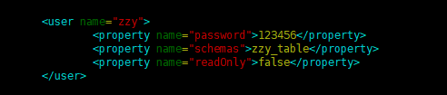
我是将原来的schema.xml文件改了个名字，然后copy了一份，在新的文件里面进行配置了如下的步骤
|
<?xml version="1.0"?> <!-- 数据库配置，与server.xml中的数据库对应 --> <!-- 分片配置 --> <!-- 物理数据库配置 --> <dataHost name="test2" maxCon="1000" minCon="10" balance="0" writeType="0" dbType="mysql" dbDriver="native"> </mycat:schema> |
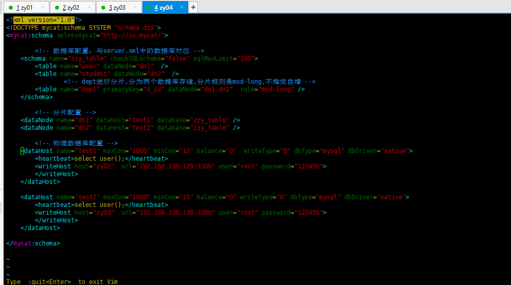
|
参数 |
说明 |
|
schema |
数据库设置，此数据库为逻辑数据库，name与server.xml中schema对应 |
|
dataNode |
分片信息，也就是分库相关配置 |
|
dataHost |
物理数据库，真正存储数据的数据库 |
|
属性 |
说明 |
|
name |
逻辑数据库名，与server.xml中的schema对应 |
|
checkSQLschema |
数据库前缀相关设置，建议看文档，这里暂时设为false |
|
sqlMaxLimit |
select 时默认的limit，避免查询全表 |
|
属性 |
说明 |
|
name |
表名，物理数据库中表名 |
|
dataNode |
表存储到哪些节点，多个节点用逗号分隔。节点为下文dataNode设置的name |
|
primaryKey |
主键字段名，自动生成主键时需要设置 |
|
autoIncrement |
是否自增 |
|
rule |
分片规则名，具体规则下文rule详细介绍 |
|
属性 |
说明 |
|
name |
节点名，与table中dataNode对应 |
|
datahost |
物理数据库名，与datahost中name对应 |
|
database |
物理数据库中数据库名 |
|
属性 |
说明 |
|
name |
物理数据库名，与dataNode中dataHost对应 |
|
balance |
均衡负载的方式 balance="0", 不开启读写分离机制，所有读操作都发送到当前可用的writeHost 上。 balance="1"，全部的 readHost 与 stand by writeHost 参与 select 语句的负载均衡，简单的说，当双主双从模式(M1 ->S1 ， M2->S2，并且 M1 与 M2 互为主备)，正常情况下， M2,S1,S2 都参与 select 语句的负载均衡。 balance="2"，所有读操作都随机的在 writeHost、 readhost 上分发。 balance="3"， 所有读请求随机的分发到 wiriterHost 对应的 readhost 执行,writerHost 不负担读压力，注意 balance=3 只在 1.4 及其以后版本有， 1.3 没有。 |
|
writeType |
写入方式 writeType="0", 所有写操作发送到配置的第一个 writeHost，第一个挂了切到还生存的第二个writeHost，重新启动后已切换后的为准，切换记录在配置文件中:dnindex.properties . writeType="1"，所有写操作都随机的发送到配置的 writeHost。 writeType="2"，没实现。 |
|
dbType |
数据库类型 |
|
heartbeat |
心跳检测语句，注意语句结尾的分号要加。 |
主要关注rule属性，rule属性的内容来源于rule.xml这个文件，Mycat支持10种分表分库的规则，基本能满足你所需要的要求.table中的rule属性对应的就是rule.xml文件中tableRule的name,具体有哪些分表和分库的实现，建议还是看下文档。我这里选择的mod-long就是将数据平均拆分。因为我后端是两台物理库，所以rule.xml中mod-long对应的function count为2，见下面部分代码：
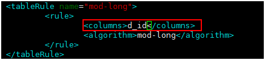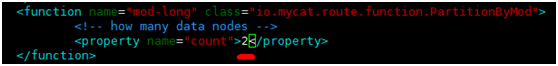
进入bin目录
./mycat start
1：linux防火墙没有关闭，导致远程连接数据库出问题，这也是一个疏忽。
2：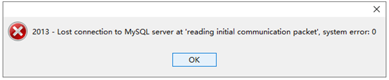
图是因为在连接之前没有将实体数据库中的表创建好，可能是由于Navicat的版本问题。
3 ：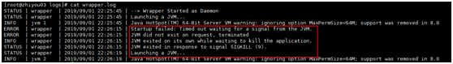
原因:出现此消息的原因通常是你的cpu在大约30秒内达到100％。
解决:
到你的wrapper.conf文件，以增加超时时间，从而防止JVM被终止。设置此值后，你需要重新启动服务器。
wrapper.startup.timeout=300000
wrapper.ping.timeout=300000
如果还是报错,就将时间调至最大 1728000
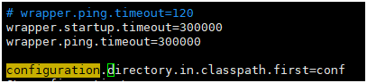
4：8066端口占用问题
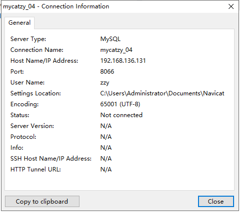
这是Navicat中新建mysql连接的配置信息。用户名是自己在server.xml中配置的 端口8066,。
跟写之前的jdbc一模一样,只不过吧用户名密码换成Mycat的
|
package com.zhiyou100.jdbc;
import java.sql.Connection; import java.sql.DriverManager; import java.sql.PreparedStatement;
public class TestMycat {
public static void main(String[] args) throws Exception { Class.forName("com.mysql.jdbc.Driver"); // mycat的用户名 String username = "zzy"; // mycat的密码 String password = "123456"; // mycat的连接地址 String url = "jdbc:mysql://192.168.136.131:8066/zzy_table"; Connection conn = DriverManager.getConnection(url,username,password); String sql1 = "insert into dept (d_name,d_desc) values ('mycat研发部2','客户端插入2')"; String sql2 = "insert into user (u_name,u_desc) values ('u_lisi','客户端插入用户lisi')"; String sql3 = "insert into student (s_name,s_desc) values ('s_zs','客户端插入学生zs')"; PreparedStatement ps1 = conn.prepareStatement(sql1); PreparedStatement ps2 = conn.prepareStatement(sql2); PreparedStatement ps3 = conn.prepareStatement(sql3); ps1.execute(); ps2.execute(); ps3.execute(); ps1.close(); ps2.close(); ps3.close(); conn.close(); }
}
|
|
BUG:插入dept表数据时时需要显示的给d_id赋值 |
|
dept表在两个逻辑数据库设计为d_id主键自增 |
其余的User和Student表自己设置主键自增
逻辑库中每个表都有有数据
下次尝试 : 不让mycat管理主键,即不指定主键,自增属性,只指定分库节点和分片规则
https://blog.51cto.com/13476134/2114125
成功!!!
Mycat实现数据的读写分离需要数据库集群有主从复制
|
ip |
状态 |
表 |
解释 |
|
192.168.136.128 |
主服务器 |
t_order表 |
主服务器主做写入操作,主服务器,创建了表,从服务器自动复制 |
|
192.168.136.129 |
从服务器 |
t_order表 |
从服务器主做查询操作, |
|
192.168.136.131 |
从服务器 |
t_order表 |
从服务器主做查询操作,与上一个查询负载均衡 |
|
192.168.136.130 |
Mycat逻辑库 |
|
做读写分离,读操作的负载均衡 |
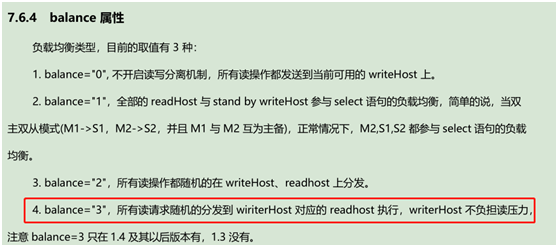
2.<writeHost>中配置<readHost>
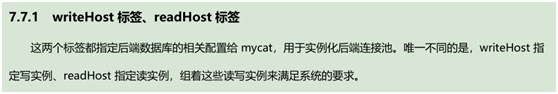
3.测试读写
4.修改从库,确定是从 从库查询的数据
5.修改Mycat的日志级别:默认为INFO,修改为debug
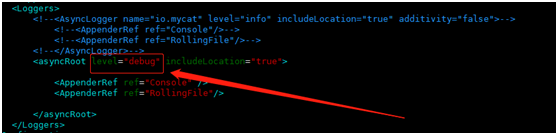
<user name="qsj">
<property name="password">123456</property>
<property name="schemas">zzy_table2</property>
<property name="readOnly">false</property>
</user>
与上分库分表的一致
将之前的分库分表的schema.xml改名字为schema-fenkufenbiao.xml
做读写分离
再创建一个schema.xml
vim schema.xml
|
<?xml version="1.0"?> <!DOCTYPE mycat:schema SYSTEM "schema.dtd"> <mycat:schema xmlns:mycat="http://io.mycat/">
<!-- 数据库配置，与server.xml中的数据库对应 --> <schema name="zzy_table2" checkSQLschema="false" sqlMaxLimit="100"> <table name="t_order" dataNode="dn1" /> </schema>
<!-- 分片配置 --> <dataNode name="dn1" dataHost="test1" database="zzy_table2" />
<!-- 物理数据库配置 --> <!-- balance="3" 读写分离--> <dataHost name="test1" maxCon="1000" minCon="10" balance="3" writeType="0" dbType="mysql" dbDriver="native"> <heartbeat>select user();</heartbeat> <!-- 写入的服务器:主服务器 --> <writeHost host="zy01" url="192.168.136.128:3306" user="root" password="123456"> <!-- 查询的服务器:两个从服务器 --> <readHost host="zy02" url="192.168.136.129:3306" user="root" password="123456"></readHost> <readHost host="zy04" url="192.168.136.131:3306" user="root" password="123456"></readHost>
</writeHost> </dataHost>
</mycat:schema> |
时间比较长
Navicat连接上
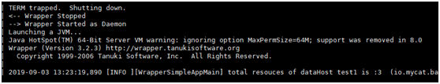
在mycat中插入数据,查看主服务器中的表,有数据,两个从服务器也都复制了主服务器上的数据.
在mycat中查询数据,查看wrapper.log日志确定执行的哪一个数据库
或者修改从服务器数据,多次查询查看效果
表名 :不用使用关键字 比如说order ,因为关键字 order by的原因,mycat会解析表名出错! 改为t_order
分库分表 : 就是在<schema>中配置table,然后指定数据库节点,和分片规则
读写分离 : 就是在<dataHost>中配置balance>0 和writeType 属性